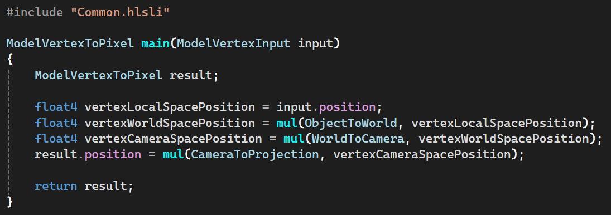
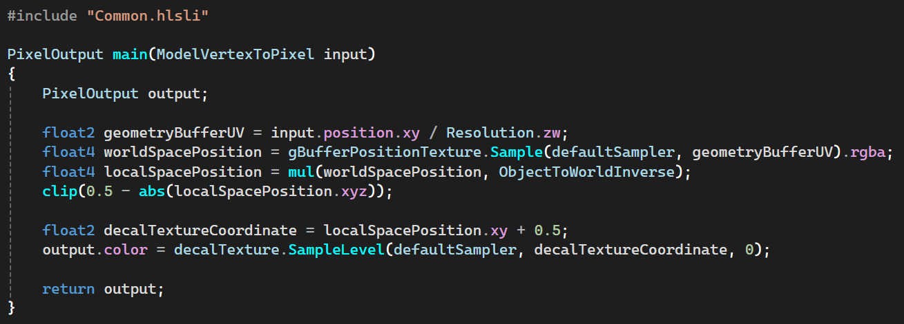

Deferred Rendering Decal System

Summary
Decal rendering is a method of projecting textures onto meshes in the game world. The first choice to make when developing Decals is what rendering technique to use, Forward or Deferred Rendering. I chose to make my implementation using Deferred Rendering. It works by referencing the Geometry Buffer, which is a set of textures containing the positions, colors, normals, materials (etc.) of objects in the game world at their closest point to the camera/viewport at each pixel on the screen. Using these Geometry Buffer textures, Decals use Planar Projection (linearly mapping 3D points onto a 2D plane) to essentially slap a texture of their own onto the meshes of the rendered game world, regardless of what textures were originally rendered there. That is not to say that it changes the textures of objects its Planar Projection "collides" with, but rather that it temporarily changes what color (and sometimes more) is shown to the viewer at that pixel.
My Motivations and Empowering the Artists
Late in fall 2024, I decided to take on the project of implementing Decals for my own personal enjoyment in my free time and because I wanted to take a small but significant step up from the graphics programming basics we had been taught a few months earlier at TGA. Another reason was that even though graphics programming isn't my main focus, I still enjoy it quite a bit and I wanted something slightly out of the ordinary relating to graphics programming to showcase in my portfolio to show my range.
An added benefit of my success with implementing Decals was that I was easily able to bring my implementation into our group project team's custom engine, Dream Engine. This empowered our artists to add even more depth, interest and immersion to our environments. They added textures of posters, dirt, stickers and so much more onto generic floors and walls. They added arrows and signage guiding the player to key points in our level. They added textures of green goo for us programmers to dynamically place wherever our player's goo projectiles collide with the game world, defining an area that slows enemies and using Decals to visually convey that information to the player.
The Render Setup
Decal Initialization
Each Decal is given a transform (containing position, rotation, and scale) upon creation. When the Decal is then initialized it's assigned a unit cube mesh (a cube with scale 1 along all axes before transforms are applied) matching the width and height of the Decal's texture in x and y scale respectively, and using z scale to determine how far (in both directions) along the forward axis the Planar Projection should project from the origin position of the decal. Position and rotation determine the location in the game world and the facing of the forward axis to be used for the Planar Projection. Essentially the transform is the Decal's ObjectToWorld matrix.

Decal Draw Calls
In the setup I created for our engine, the level makes the draw calls for all Decals in succession. This is done right after rendering the level geometry onto the Geometry Buffer but before rendering any enemies, the player and any other objects we don't want the Decals to be projected onto, since Decals will only project onto what is currently on the Geometry Buffer textures before the Decals are rendered. Another way to control what they project onto would be to use Layer Masks stored on the Geometry Buffer to filter out what can't be projected onto. With further development, the ordering (or Layer Masking) could easily be exposed to be data driven from another interface, allowing artists and designers to assign in the level editor (or another tool) which objects Decals should project onto, and which to not project onto, and to have such settings be different for different Decals.
The "myDeferredDecals" vector contains the Decals placed in our level editor (mainly by Artists, using documentation provided by me). The "myGooPuddleDecals" vector contains the Decals created by the player's goo gun during regular gameplay. They all render using a new function I created for our engine's model drawer that expands the object buffer to include both the untouched and inverse versions of the ObjectToWorld matrix. This was done since it was the first instance of us needing the inverse of an object's ObjectToWorld matrix in our shaders. I could have just inverted the matrix in the shader using the GPU, but I decided against that because, as of the making of my Decals (and still true as of writing this text), our engine's main performance issues were on the GPU, not the CPU.

The Vertex Shader
A barebones version of the vertex shader used for regular mesh renderings in our engine, converting the position of the cube mesh to be used for the Planar Projection from local space all the way to projection space.
The Pixel Shader
The calculations in the pixel shader are the core of a Decal implementation. Mine starts by dividing the projection space position of the cube mesh by the current resolution of the game (stored in a separate constant buffer which is updated less frequently to save on performance) to calculate the UV coordinates to sample from the Geometry Buffer world space position texture. Then the world space position from the Geometry Buffer is multiplied with the inverse of the cube mesh's ObjectToWorld matrix, so that we can know where that point on the screen is relative to the local space of the cube mesh. We take 0.5 minus the absolute value of the sampled Geometry Buffer local space position and then call the HLSL intrinsic function "clip" to discard any resulting position that would lie outside the bounding volume of the cube mesh. If the pixel was not discarded in the clip step, we know that the sample is a valid position within the Decal's cube mesh and we can simply use it to calculate the UV coordinate on the Decal texture and draw that sampled color onto the albedo (rgba color) texture of the Geometry Buffer, using a 0.5 positive offset to move the local space position from the range of -0.5 to 0.5 into the range of 0 to 1.
This is the most basic form of a Decal rendering. Beyond the data driven possibilities I explained above there are also more elaborate things that can be done when rendering a Decal. You can add three dimensionality using Directed Projections. Or you can draw onto any of the textures of the Geometry Buffer besides world position in any combination you wish when rendering a Decal. With only slight modifications, alternate versions of this pixel shader could easily be developed to affect not only color but also lighting and shadow calculations (via the normal map and material textures for example), adding exponentially onto the possibilities that Decals provide for the entire development team.
The Level Editor Workflow
Setup in Unity
We use Unity as an external level editor for our engine, exporting the object data to json and binary files to parse in our own engine. The setup for my Decals in Unity is quite simple. It takes the transform as is from any object marked with the tag "DecalBox" and uses the sprite renderer component to find the path of the decal to render and to multiply the x and y values of the transform's scale by the width and height respectively.

Rendered in Our Engine
The end result in our engine is a 1:1 replication of the setup displayed in Unity.